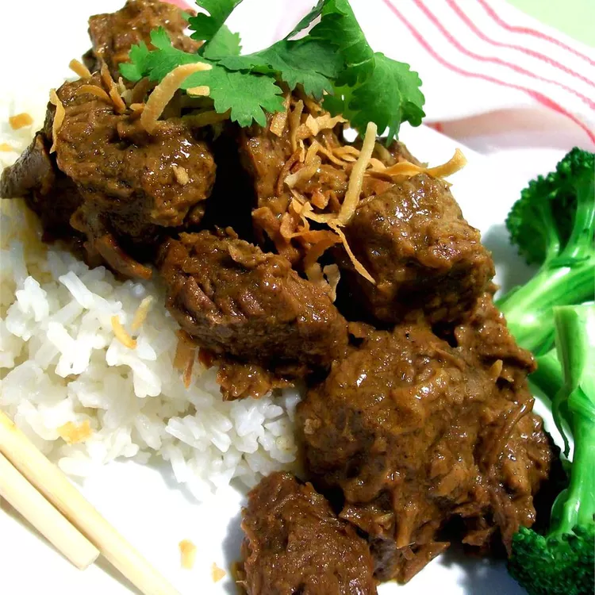

Beef Rendang

Malaysian Beef Rendang
his dish has a unique flavor, and by varying the amounts of sugar and chilies a whole range of effects can be produced. Serve over rice.
ingredients
- ⅜ pound shallots
- 3 cloves garlic
- 15 dried red chile peppers
- 5 slices fresh ginger root
- 5 lemon grass, chopped
- 2 teaspoons coriander seeds
- 2 teaspoons fennel seeds
- 2 teaspoons cumin seeds
- 1 pinch grated nutmeg
- 1 tablespoon vegetable oil
- 1 ¼ pounds beef stew meat, cut into 1 inch cubes
- 1 ½ tablespoons white sugar
- 2 cups shredded coconut
- 5 whole cloves
- 1 cinnamon stick
- 1 ⅔ cups coconut milk
- ⅞ cup water
- salt to taste
Preparation
- Heat the coconut in a dry wok, stirring continuously until golden brown. Set aside to cool.
- Using a blender or a food processor, blend the shallots, garlic, chilies, ginger, and lemon grass to a thick paste.
- Grind the coriander, fennel, cumin and nutmeg.
- Using the wok, fry the shallot paste in a little oil for a few minutes. Add the ground coriander, fennel, cumin and nutmeg; cook for 3 to 4 minutes, stirring continuously. Add beef; cook over a medium heat for a further 3 to 4 minutes, or until meat is browned.
- Stir in sugar, coconut, cloves, cinnamon stick, coconut milk , and water. Bring to a boil, lower heat, and simmer until most of the liquid has gone and the meat is tender (about 1 hour). Season with salt to taste.